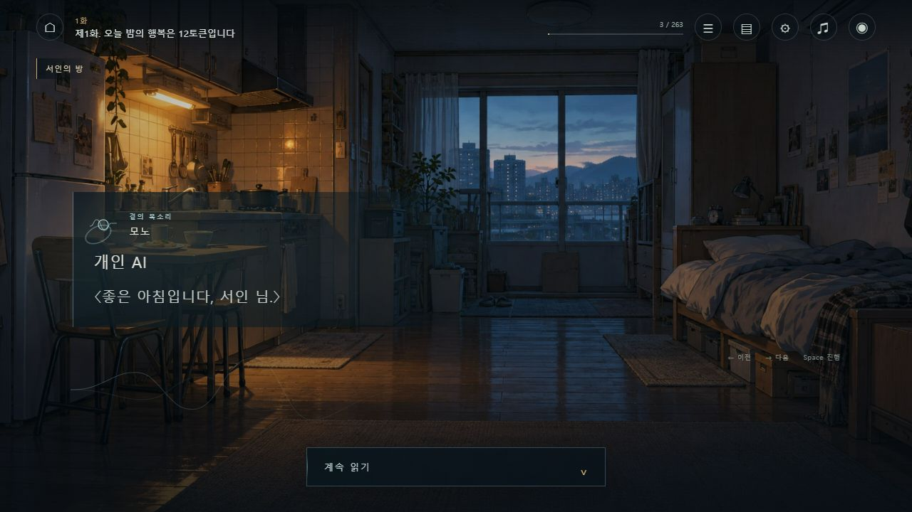
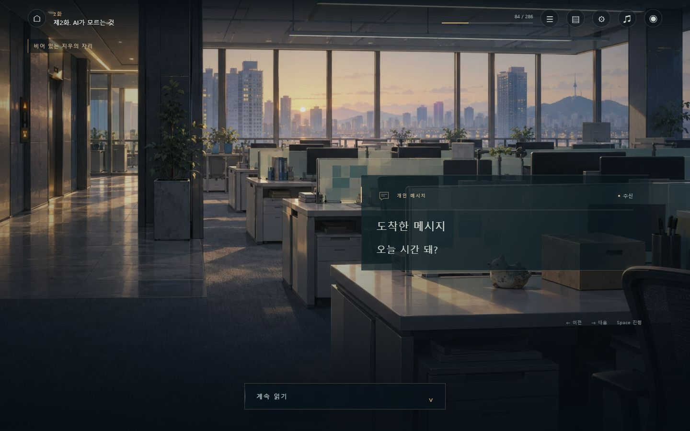
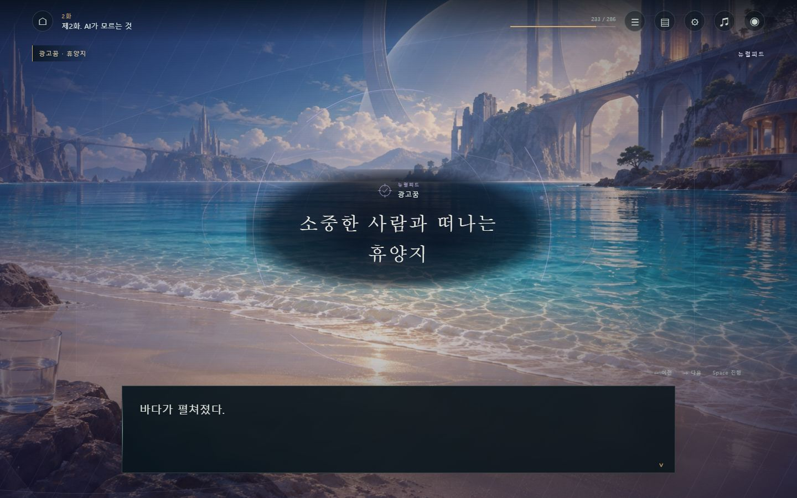
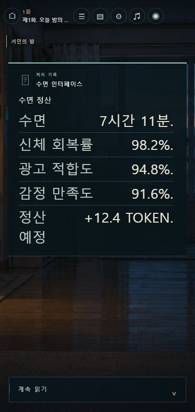
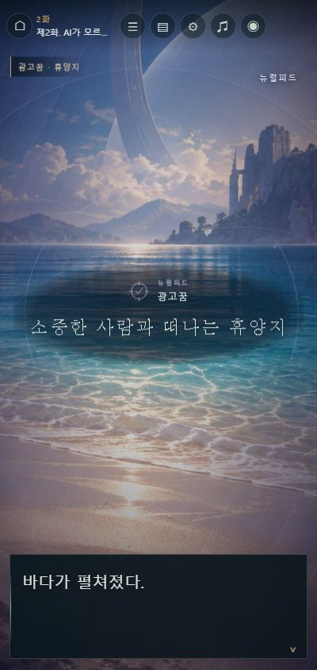

개인 AI
곁에 머무는 이름과 목소리. 부드러운 궤적과 파형으로 개인적인 응답의 온도를 남깁니다.
확인되는 AI의 응답을 따로 구분하고, 사람이 보낸 메시지와 시각적 거리를 나눕니다.
꿈을 잃은 세계 · 1–30화 연출 기록
개인 AI의 말, 누군가 보낸 메시지, 신경망을 타고 도착하는 감각.
같은 창에 담겨 있던 서로 다른 경험에 각자의 거리와 리듬을 주었습니다.
이 기록은 이번에 적용한 연출과 대표 화면, 그리고 실제로 확인한 범위를 정리합니다. 원문과 세계관을 기준으로 읽는 경험을 다듬었습니다.
이 세계의 소통 방식
연출의 출발점은 관자놀이 인터페이스를 통한 뇌 접속입니다. 말과 숫자, 감각이 인물의 지각에 닿는 방식을 화면의 여백과 빛, 소리로 구분했습니다.
개인 AI는 관자놀이 인터페이스로 뇌에 연결됩니다. 모노의 응답과 정보는 그 연결을 통해 인식되는 신호로 연출했습니다.
시야 주변의 옅은 파형, 집중되는 빛, 시간차를 가진 감각의 흔적으로 존재감을 만듭니다. 외부 투사 장치나 안경·렌즈·홀로그램을 새 설정으로 더하지 않았습니다.
곁에 머무는 이름과 목소리. 부드러운 궤적과 파형으로 개인적인 응답의 온도를 남깁니다.
확인되는 AI의 응답을 따로 구분하고, 사람이 보낸 메시지와 시각적 거리를 나눕니다.
동심원의 빛과 주변부의 파형, 어긋나는 기억의 면. 광고 꿈과 접속으로 유발된 감각에 깊이를 줍니다.
감각 단서는 장면의 맥락을 따릅니다. 일상의 감각과 회상은 원래 서술의 자리에서 읽습니다.
금액과 회복률, 처리 상태를 차분한 기록으로. 실제 숫자가 있는 항목은 라벨과 값을 정렬합니다.
원문의 숫자·단위·부호·문장부호와 순서를 유지합니다. 분리가 모호한 문장은 그대로 둡니다.
넓고 조금 먼 목소리. 광고와 공지, 뉴스의 공적인 성격이 개인적인 응답과 구별됩니다.
매체는 원문에 맞춰 구분합니다. 종이의 글과 과거의 말을 새 디지털 수신으로 바꾸지 않습니다.
직접 도착한 짧은 응답과 메시지는 상단의 소통 영역이 주된 읽기 자리가 됩니다. 일반 서술과 감각의 문장은 하단에 이어져, 같은 긴 문단을 두 번 읽지 않도록 했습니다.
연결된 대화나 정산은 이미 읽은 이전 항목을 최대 3개만 누적합니다. 묶음의 첫 진입에만 소리를 주고, 다음 항목마다 창과 알림이 다시 열리는 느낌을 줄였습니다.
명시적인 감각 단서 50개에 장면을 잇는 지속적인 공간감을 더했습니다. 읽는 동안의 분위기와 접속 순간의 변화가 한 흐름 안에 머물도록 구성했습니다.
대표 화면
플레이어의 장 선택 → 해당 화 → 연출 장면에서 아래 이름의 장면을 찾아볼 수 있습니다. 화면을 누르면 원본 크기로 열립니다.

이름과 응답, 낮은 빛의 파형이 한데 머무릅니다. 짧은 직접 응답은 이 영역에서 원문 전체를 읽습니다.
장 선택 → 1화 → 연출 장면 → 개인 AI
그 순간 확인되는 정보만으로 도착을 표현합니다. 발신자의 정체를 뒤의 전개에서 미리 가져오지 않습니다.
장 선택 → 2화 → 연출 장면 → 도착한 메시지
시야에 번지는 감각의 층과 원래 서술이 각자의 자리를 가집니다. 동심원의 빛과 감각 정보는 장면의 분위기를 만들고, 이야기는 하단에서 이어집니다.
장 선택 → 2화 → 연출 장면 → 광고 꿈 · 휴양지
숫자와 단위가 분명히 읽히도록 정렬합니다. 작은 화면에서도 본문의 글자 크기 설정을 따르고, 필요한 경우 읽기 영역 안에서 스크롤합니다.
장 선택 → 1화 → 연출 장면 → 수면 정산
감각의 중심은 화면 위쪽에 둡니다. 하단 이야기가 차지하는 높이에 맞춰 연출 공간을 확보해, 읽기와 선택을 가리지 않도록 했습니다.
장 선택 → 2화 → 연출 장면 → 광고 꿈 · 휴양지장면을 이어 읽을 때의 변화도 함께 다뤘습니다. 앞서 읽은 기록의 누적, 같은 연결 안에서의 조용한 전환, 다시 들어왔을 때의 소리 정리를 적용했습니다. 움직임 줄이기와 본문 글자 크기 설정을 함께 고려했습니다.
원문과 적용 범위
표시 방식이 달라져도 무엇을 알고 있는지, 누가 말하는지, 어떤 매체를 읽는지는 원문이 정합니다. 새 연출은 그 구분을 더 선명하게 만드는 데 사용했습니다.
AI의 응답과 사람의 메시지, 아직 알 수 없는 발신자, 공적인 송출을 구분하는 정보를 바로잡았습니다. 뒤의 이야기에서 드러날 정보를 현재 장면에 앞당겨 붙이지 않도록 했습니다.
실제 종이와 간판의 글, 회상 속 사람의 말은 일반 서술로 남깁니다. 광고 꿈이나 접속이 유발한 감각과 일상의 감각도 구분해, 모든 문장을 신경망 수신으로 덮지 않도록 했습니다.
원고의 문장은 변경하지 않았습니다. 주된 소통 영역에는 해당 원문 전체를 표시하고, 숫자 항목은 문장부호와 단위까지 유지합니다.
누적 기록은 이미 읽은 동일 묶음의 이전 항목만 사용합니다. 현재 문장을 중복해서 기록하거나 이후 문장을 미리 보여주지 않습니다.
이번 새 연출의 범위는 본편 1–30화와 수록 외전 21편입니다. 이후 31–105화의 기존 원문과 연출은 보존했습니다. 이번 작업에는 성우 녹음과 인물 표정 추가 제작을 포함하지 않았습니다.
실제로 확인한 내용
화면과 원문 대응, 전환 동작을 대표 장면에서 살펴봤습니다. 자동 검사와 실제 브라우저 확인, 별도로 필요한 감상 검수를 구분해 기록합니다.
최종 자동 검사 50개에서 실패 항목은 없었습니다. 작업 전후의 원고·설정 139개 파일은 해시가 일치했습니다.
검사 기록에는 연출 연결 1,066개, 단일 본문 표시 1,015구간, 연속 연결 묶음 715개, 숫자 항목을 정렬한 기록 10곳이 집계되어 있습니다.
자동 검사는 원문 대조, 장면별 분류, 누적 기록의 시점, 숫자 파서, 진행·저장과 전환 상태, 합성음 구성 및 정리 동작을 대상으로 합니다. 실제 화면 확인은 대표 장면과 모바일 읽기 영역을 대상으로 했습니다.
브라우저의 화면 확인과 자동 검사 결과는 작품의 전체 감상이나 상업적 완성도를 판정하는 점수로 환산하지 않았습니다. 전체 연속 독서와 실제 청취는 별도의 검수 대상으로 남깁니다.
화면에서, 이어지는 문장까지.대표 장면을 열고 다음 문장으로 이어 읽어볼 수 있습니다.
플레이어 열기